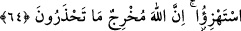

müminle beraberdir. Takvâ sâhibi mümin ile beraber olan Allah olunca ve onu çektiği
sıkıntıdan kurtaracak olan yine O olunca sıkıntı ve eziyete mâruz kalan mümin, sevinçli
ve üzüntülü her halinde Allah’ı müşahede etttiği için eziyet çekmek ona kolay gelir.
Mesnevî’de denir ki:
Padişahımız yaygısını nereye yaydı ise
İğne gözü kadar olsa bile bize geniş bir ovadır
Nerede ay gibi bir Yusuf varsa
Kuyunun dibi olsa da, bizim için cennettir
64. Münâfıklar, kalplerinde bulunanı onlara haber verecek bir sûrenin
indirilmesinden çekinirler. De ki: Siz alay edin (bakalım)! Allah o çekindiğiniz şeyi
ortaya çıkaracaktır.
“Münâfıklar, kalplerinde bulunan” şirk ve ikiyüzlülüğü “onlara” müminlere
“haber verecek bir sûrenin” müminlere “indirilmesinden” bu sûrenin içlerinde
gizlediklerini ortaya çıkararak kendilerini rezil ve rüsvay etmesinden “çekinirler.” Bu
mânâya göre âyette bulunan ilk iki zamir müminlere, üçüncüsü ise münâfıklara râci olur.
İfadenin mânâsı karışmadığı sürece ifadede yer alan zamirlerin değişik isimlere râci
olmasının (dil açısından) bir sakıncası yoktur.
Âyetteki zamirlerin tamamının münâfıklara râci olması da mümkündür. Bu takdirde
âyetin mânâsı şu şekilde olur: “Münâfıklar,” kendileri hakkında “kalplerinde
bulunanı” kendi aralarında açığa vurdukları küfür ve nifak sözlerine ilâveten
kalplerinde bulunan gizli sırları “kendilerine haber verecek bir sûrenin
indirilmesinden çekinirler.” Çünkü kendileri hakkında indirilenler aleyhlerine
olacaktır.
İndirilecek sûrenin münâfıkların iç yüzlerini kendilerine haber vermesinin anlamı, bu
sûrenin onların gizlemekte oldukları sırları ifşâ etmesi, sırlarının insanlar arasında
yayılması ve bunları başkalarının ağızlarından duymalarıdır. Yoksa kalplerinde
gizledikleri şeyler kendilerine mâlumdur. Onlara göre mahzurlu olan, bu sırlardan
kendilerinin değil müminlerin haberdar olmasıdır.
Eğer: “Münâfıklar, Peygamber Efendimiz’in (a.s.) nübüvvetini inkar ettikleri halde
münâfık olduklarını açığa çıkaracak vahyin inmesinden nasıl çekinirler, O’na vahiy
indiğini nasıl kabul ederler?” diye sorarsan, ben buna şöyle cevap veririm:
Münâfıkların bir kısmı nübüvveti biliyordu, ondan haberdardı. Fakat sırf inat ve
hasetleri yüzünden müşriklerle beraber oldukları zaman onu inkar ediyorlardı. Bazı